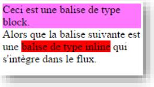
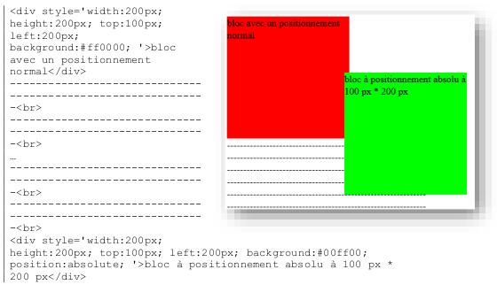

Les CSS (pour Cascading Style Sheet ou feuilles de style en cascade) permettent
d’ajouter facilement du style (positions, polices, couleurs, tailles, bordures, ...) à des
documents web. La définition du style peut être associée au document html de plusieurs
façons :
1. Directement dans la balise à l’aide de l’attribut style, de la manière suivante :
<p style='color:#ff0000'>Bla bla bla</p>
Bla bla bla
2. Dans l’entête du document html, afin de l’appliquer à la totalité de la page. Par exemple, pour appliquer
la police Arial à l’ensemble des paragraphes de la page :
<style>
p {font-familly :Arial ;}
</style&gp
3. Dans un fichier externe –dont l’extension est généralement .css- qu’il sera possible d’inclure dans
plusieurs pages web, de la manière suivante :
Dans les cas 2 et 3, la définition de style repose sur des sélecteurs qui associent une
balise (p, img, ...) à des propriétés (color, border, font-familly...) listées entre accolades.
Les propriétés, aussi présentes dans le cas 1, sont séparées par un point-virgule (;) et
sont composées d’un nom, suivi de deux points (:) et d’une valeur simple (Arial) ou
multiple séparées par des espaces (1px solid #666666).
Dans le cas de la valeur multiple de border utilisée dans le cas 3, elle permet de définir
la bordure de l’image et utilise 3 paramètres :
- 1px : l’épaisseur de la bordure Les tailles peuvent être exprimées en pixels (px), en pourcentage par
rapport au contenant (%), en proportion par rapport à la taille du texte (em)
ou selon unités absolues. L’annexe 1 détaille l’utilisation des tailles :
http://www.css-faciles.com/unites-css.php
- #666666 : la couleur de la bordure Les couleurs sont indiquées à l’aide de leur code hexadécimal qui
commence par le signe dièse #. Retrouvez le détail de la gestion des couleurs
dans l’annexe 2 : https://htmlcolorcodes.com/fr/
2. Les selecteurs
Dans les cas 2 et 3 (page précédente), on utilise un sélecteur pour sélectionner les
éléments auxquels le style va s’appliquer.
Les noms de éléments sont les sélecteurs de base. Ainsi, la ligne 1 du cas 3 désigne
toutes les images et s’appliquera donc à l’exemple suivant :
<img src=’arnaud.jpg’>
Classe d’un élément : utilisée en javascript et en CSS à l’aide du point (.) -comme dans
la ligne 2 du cas 3- elle permet de spécifier le style d’un élément à l’aide de l’attribut
classe, comme dans l’exemple suivant :
<p class=’flashy’> ...
L’identifiant : il pourra être attribué de manière unique à un élément, et utilisé en
javascript et en CSS à l’aide du signe dièse (#), comme c’est le cas dans la troisième
ligne du cas 3 pour l’id bb1. Il peut être défini de la manière suivante :
<ul id=’bb1’> ... </ul>
Compléments :
- On peut combiner les sélecteurs : p.main sélectionne tous les paragraphes qui
ont la classe main.
- On peut chainer les sélecteurs pour parcourir l’arborescence : li img va désigner
les img qui sont descendants d’un li (directement ou indirectement)
- On peut aussi spécifier une descendance directe avec le supérieur (>):
#album>img va désigner les img qui sont fils d’un élément dont l’id est album.
- En fonction de la structure de la page et des sélecteurs choisis, le style pourra
être appliqué à 0, 1 ou plusieurs éléments.
- Certains éléments se verront même appliquer plusieurs styles contradictoires.
C’est généralement la dernière valeur lue par le navigateur qui persistera.
- On peut définir un style pour plusieurs sélecteurs en les séparant par une
virgule : p, img, section#prems
Parmi les différents types de balises présentent dans une page web, on peut identifier
deux types de balises

- les balises de type block (des blocs),
qui permettent de structurer la page
et auxquelles on peut imposer une
taille ou une position. Par défaut le
bloc va utiliser la totalité de la
largeur de la page et va commencer
une nouvelle ligne –c’est le cas de la
balise à fond rose sur l’exemple ci-
contre-;
- les balises de type inline (en-ligne en
français) qui viennent s’intégrer dans le flux du texte pour en modifier la taille, la
police, ou la couleur par exemple, pour intégrer une image, un champ de formulaire,
etc... -c’est le cas de la balise rouge sur l’exemple ci-contre-.
4. Les balises structurantes
Lors de l’écriture d’une page web, une des techniques est de commencer par créer la
structure de la page à l’aide de blocs. Afin de les positionner, et avant de considérer
leur contenu, il est conseillé d’y mettre du contenu bidon (https://www.faux-texte.com/
et/ou de colorer les blocs en leur donnant un style background-color (une
couleur de fond). Ainsi, il sera possible de positionner des blocs sans bordure ni marge
dans la page. Dans un second temps, nous ajouterons des contenus dans ces pages.
Dans ce chapitre, nous allons créer des structures de pages web et utiliserons des blocs
(balises div, qui pourront être remplacées par n’importe quelle balise de type bloc) ainsi
que les propriété CSS suivantes :
- background-color : la couleur de fond du bloc
- position : le type de positionnement du bloc
- width et height : la taille en largeur et en hauteur du bloc
- top, left, right, bottom : la position du bloc par rapport au haut, à la droite, à
la gauche ou au bas de la page
- z-index : la profondeur (celui avec la plus grande valeur est affiché au-dessus)
Exercice 1 : Ecrivez une page web contenant 3 blocs de trois couleurs différentes et
ayant 3 hauteurs et 3 largeurs différentes.
5. Positionnement des blocs
Par défaut, les blocs sont intégrés dans le flux de la page et affichés à l’endroit où ils
sont écrits, dans la succession des éléments. Pour définir un comportement différent,
on utilisera la propriété CSS position.
position : modifier le type de positionnement de l’élément dans la page.
- absolute : le positionnement absolu permet de positionner un élément dans la
page (par défaut), ou dans un bloc parent avec un positionnement défini.
- fixed : le positionnement fixe permet de placer un élément dans la fenêtre du
navigateur, même si l’internaute scrolle, l’élément reste fixe.
- relative : le positionnement relatif permet de décaler l’élément par rapport à sa
position normale dans le flux de la page.
Pour positionner un élément, on définira les propriétés CSS left ou right, top ou bottom
dont on exprimera la taille.
Quelques exemples et compléments :
- Exemple de positionnement absolu

Sur cet exemple, le coin supérieur gauche du bloc vert est à 200 pixels du bord
gauche et à 100 pixels du haut de la page.
Quand plusieurs blocs se superposent, il est possible de régler leur ordre d’empilement
avec la propriété z-index qui détermine la valeur de superposition qui est par défaut
de 1. L’élément avec le plus grand z-index sera affiché au-dessus.
Exercice 2 : Complétez les zones ... pour obtenir
le rendu de droite. Les lignes horizontales
permettent de visualiser le positionnement, mais
ne sont pas à reproduire.
 Cet exemple montre que les balises en-ligne –comme un span- peuvent bénéficier de
positionnement.
Cet exemple montre que les balises en-ligne –comme un span- peuvent bénéficier de
positionnement.